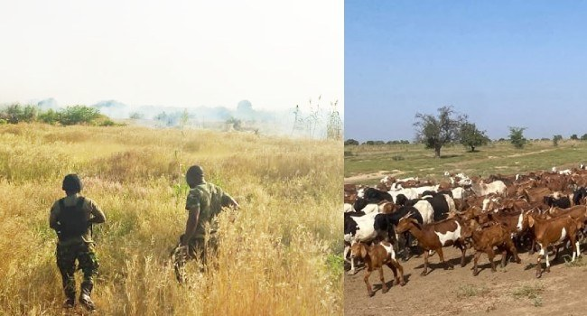

Troops Foil Ambush By Terrorists In Zamfara, Recover 520 Livestock In Sokoto

Troops of the Joint Task Force North West, Operation Fansan Yamma, said they foiled a terrorist ambush on the Anka–Guruzu Road in Zamfara State and rescued two abducted herders during a separate operation in Sokoto State. The operations also resulted in the recovery of 520 livestock, according to a military statement issued by task force media information officer Captain Tamuno Sinivie.
The statement said Sector 2 troops came under a coordinated attack on October 28, 2026, while conducting a fighting patrol along the Anka–Guruzu Road. The patrol followed reports of terrorist activity in the area, and attackers were positioned on both sides of the route. Troops returned fire, inflicting what the military described as heavy casualties before the attackers fled. The soldiers then secured the road and restored movement for commuters.
One soldier was shot during the Zamfara encounter and evacuated for medical care. The statement said he was in stable condition. In Sokoto, troops acted on intelligence about an attempt to rustle livestock and abduct herders at Takasaba Village in Sabon Birni Local Government Area. They engaged the suspected attackers, who fled and left behind 520 livestock and two abducted herders, aged 50 and 14. The rescued herders were handed over to Sabon Birni local government authorities.
Operation Fansan Yamma Theatre Commander Major General W. B. Idris commended the troops and urged them to maintain pressure on terrorist groups. He also reaffirmed the military’s commitment to restoring peace and security in the North-West and called on residents to provide security agencies with timely, credible information.
Source: Channels TV